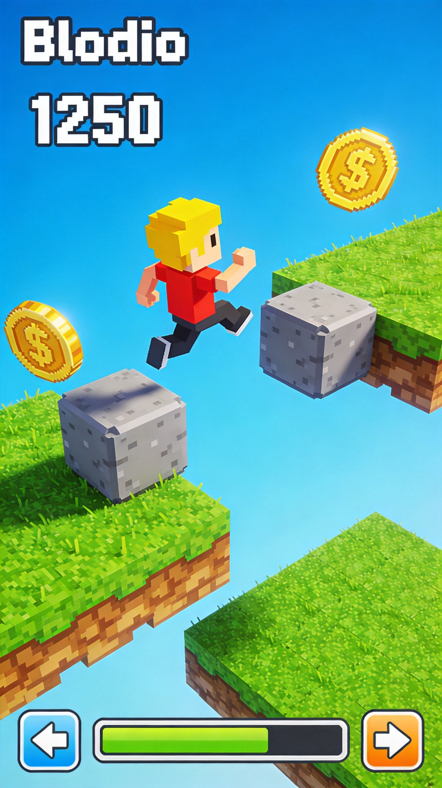
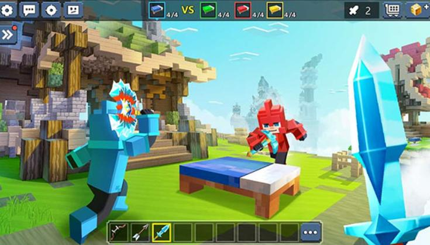
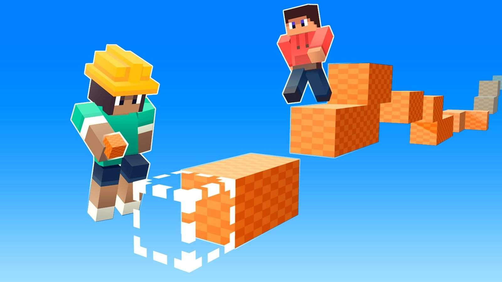
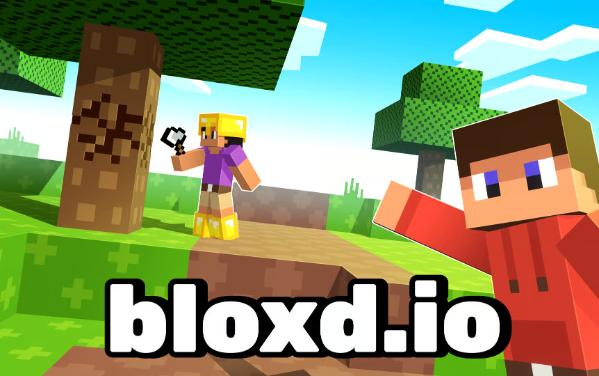
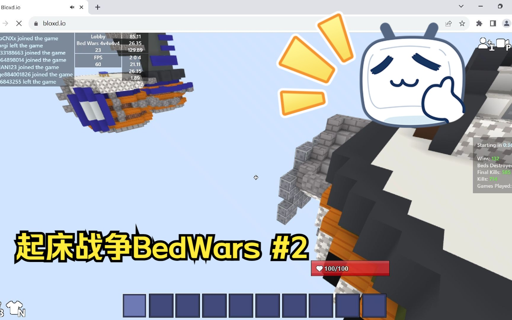

Bloxd.io is a versatile .io game offering multiple game modes including Bedwars, Parkour, and PvP combat. The block-based gameplay combines strategic building with fast-paced action. Whether you want to defend your bed, race through obstacle courses, or dominate in player versus player combat, this guide covers essential strategies for all modes.
🎮 Game Modes Overview


Bedwars
Bedwars is a team-based mode where you protect your bed while trying to destroy enemy beds. Your bed is your life—if it breaks, you only get one respawn before being eliminated for good. Teams of 2-4 work together to gather resources, upgrade equipment, and launch coordinated attacks.
Parkour
Parkour mode challenges you to navigate obstacle courses as quickly as possible. Jump across blocks, avoid hazards, and reach the finish line. Timing and precision are essential for mastering parkour maps.
PvP Arena
The PvP mode puts players against each other in combat arenas. Fight solo or in teams, use weapons and abilities, and climb the ranks. Quick reflexes and smart positioning are key to victory.
🏗️ Building Mechanics

Block Types
- Wool Blocks - Basic building material, easy to place and break
- Hardened Clay - More durable, better for defensive structures
- End Stone - Premium blocks, very durable but expensive
- TNT Blocks - Explode when activated, useful for offense
Building Controls
- Left Click - Place blocks
- Right Click - Break blocks
- Scroll Wheel - Select different block types
- Shift + Click - Place bridges/walls quickly
Building Techniques
- Towering - Building vertically to gain height advantage
- Bridging - Extending platforms horizontally across gaps
- Rush Defense - Quick wall building to block incoming attacks
Don't waste resources on unnecessary structures. Always prioritize defensive upgrades and essential bridges before decorative building.
🛏️ Bedwars Strategy
1. Team Coordination
Communication with your teammates is essential. Divide responsibilities: one player defends while others gather resources or attack. Call out enemy positions and coordinate strikes.
2. Early Game Priorities
In the first minutes: secure your bed with basic defenses, gather iron and gold from generators, upgrade your generator for better resources, don't overextend early—survive first.
3. Bed Protection
Your bed is your lifeline. Always build protective walls around it, especially at night or when enemies are nearby. Use different block types to create layered defenses.
4. Diamond and Emerald Economy
Once you have enough iron and gold, prioritize diamond generators and emerald purchases. Diamond armor and weapons significantly increase your combat effectiveness.
5. Offense vs. Defense Balance
Find the right balance between defending your bed and attacking enemies. Over-defending leaves you poor, while over-attacking risks your bed being destroyed while you're away.
🏃 Parkour Tips

1. Start with Easy Maps
If you're new to parkour, begin with beginner-friendly maps. These teach basic mechanics like jumping, bridging, and timing before introducing harder challenges.
2. Master the Timing
Parkour is all about timing. Practice makes perfect: watch block patterns before attempting, start slow, then speed up once comfortable, learn to hold jump vs. tap jump.
3. Use Checkpoints
Most parkour maps have checkpoints. Don't skip them if you're struggling—they save your progress and let you respawn closer to your current position.
4. Handle Moving Obstacles
Some maps have moving blocks or hazards: wait for safe windows to move, use the block's momentum to extend jumps, time your movements with obstacle patterns.
⚔️ PvP Combat
1. Weapon Selection
Different weapons suit different playstyles: Sword for close range, fast attacks; Bow for ranged combat; Axe for slower but higher damage; Trident for versatile melee and ranged.
2. Hotbar Management
Keep your most-used items easily accessible. Arrange your hotbar logically: blocks first, then weapons, then utilities. Muscle memory saves lives.
3. Strafing and Movement
Don't stand still in combat. Strafe constantly to make yourself a harder target. Jump while attacking to mix up your movement pattern.
4. Block Hit Technique
When an enemy attacks, quickly place a block between you and the attacker. This blocks their first hit and gives you an advantage in the trade.
5. Know When to Retreat
Not every fight needs to be taken. If you're low on health or outnumbered, build escape routes. Retreating to heal and return is often smarter than dying.
💎 Pro Tips
Practice building in peace mode first. Spend time learning block placement speed and bridge building without pressure from enemies.
Watch your resource count. Running out of blocks mid-fight is fatal. Always maintain a healthy inventory.
Learn common strategies. Watch experienced players on YouTube or study their movements in-game to learn advanced tactics.
Stay calm under pressure. Panicking leads to mistakes. Take a breath, assess the situation, and act methodically.

❓ Frequently Asked Questions

How do I win in Bedwars?
Win by being the last team with an intact bed. This requires balancing defense (protecting your bed), economy (collecting resources), and offense (destroying enemy beds). Teamwork is essential.
What are the best Bedwars upgrades?
Prioritize: Bed protection (tragedy inverts), Iron and Gold generator upgrades, and defensive walls. Weapons and armor upgrades come next depending on your playstyle.
How do I improve my parkour times?
Practice individual sections repeatedly. Learn the optimal path through each map. Don't rush—accuracy first, speed will come naturally with practice.
Is there matchmaking in PvP?
Bloxd.io uses skill-based matchmaking in ranked modes. Practice in casual modes first to improve your skills and rank up gradually.
How do I block hit effectively?
Block hitting requires fast reflexes. Place a block the instant an enemy attacks. With practice, you can block most attacks and gain the advantage in trades.
📝 Conclusion
Bloxd.io offers diverse gameplay that rewards both strategic thinking and mechanical skill. Whether you prefer defending your bed in Bedwars, racing through Parkour courses, or dominating in PvP combat, consistent practice and learning from mistakes will make you better.
Ready to start playing? Jump into Bloxd.io and try these strategies. See you in the arena!
Last updated: January 20, 2024
Written by the iogameguide.com team